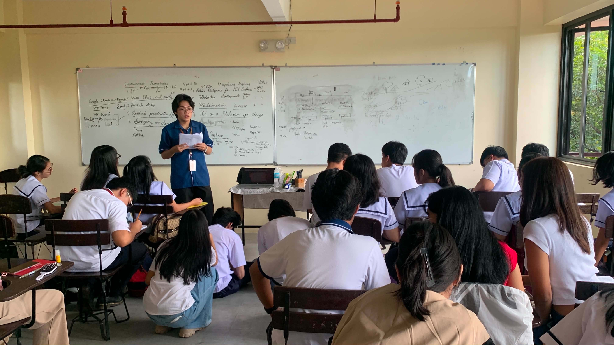

Bachelor of Secondary Education
JERRY
LAZARO
Major in English · A.Y. 2025-2026
A compilation of On-the-job Training Documentation in Education
Explore Portfolio
Who I Am
About Me
This is the accomplished portfolio of both professional and personal experiences and activities of practice teacher Jerry Lazaro, a fourth-year student studying at Polytechnic University of the Philippines - Main, taking the program of Bachelor of Secondary Education Major in English with the ID Number of 2022-06078-MN-0. He is a practice teacher at Polytechnic University of the Philippines - SHS, teaching the subjects of Introduction to Philosophy of Human Heart during Field Study 1 & 2 and 21st Century Literature from the Philippines and the World.
This specific portfolio contains all the necessary documents, pieces of evidence, and activities with regard to his Field Study and Practice Teaching experience, with other necessary files such as his thesis papers (group and individual), certificates of participation in different research conferences he attended, etc.
As for practice teacher Jerry, he believes that Field Study and Practice Teaching courses allow practice teachers to personally experience what it feels like to be a teacher by being deployed in their respective schools, wherein they will face real-life scenarios and experiences with real students, allowing them to hone their skills, behaviors, and knowledge. Moreover, because of this, he was able to determine what kind of teacher he is in a short span of time and develop a loving relationship with his students in the teaching profession.
Portfolio Sections
Documentation Categories
This portfolio is organized into six categories, each representing a key area of the Field Study and Practice Teaching experience. Select a category to view the documents, papers, and reflections within it.